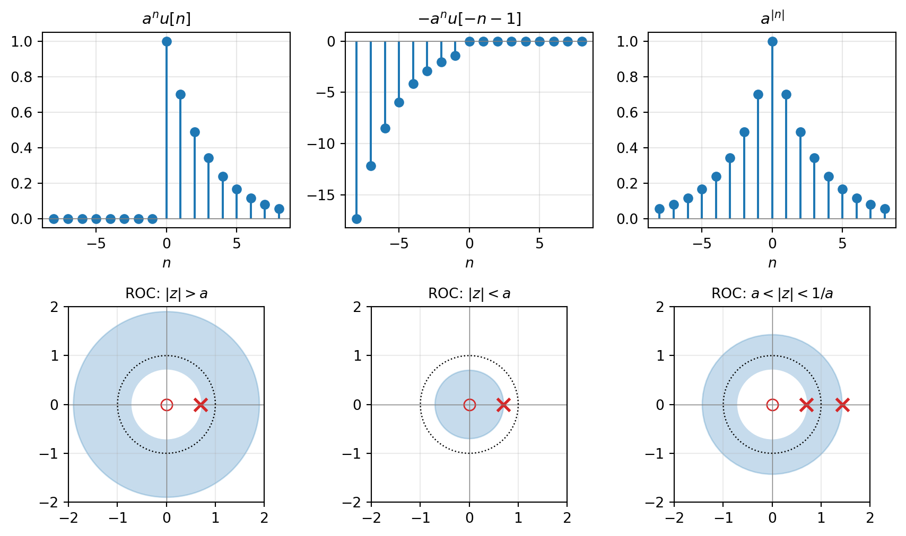
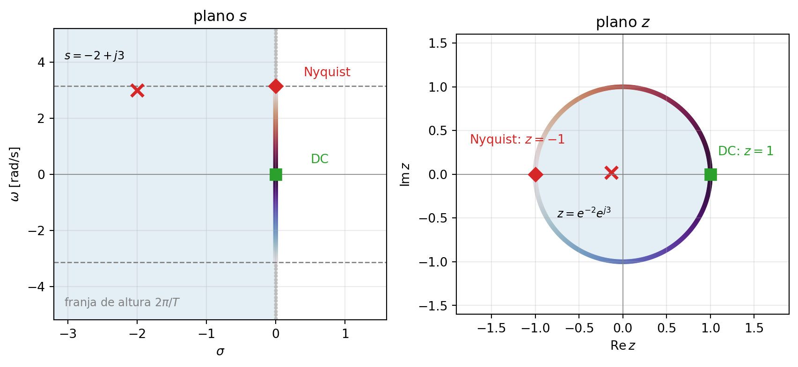
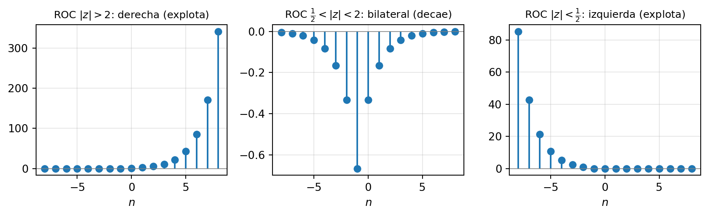
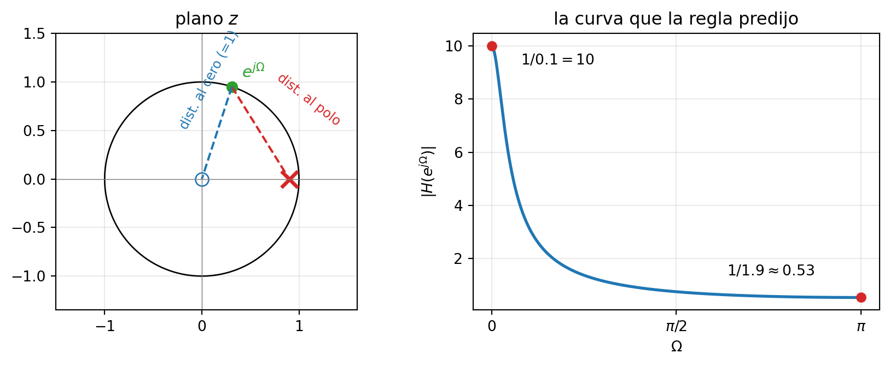
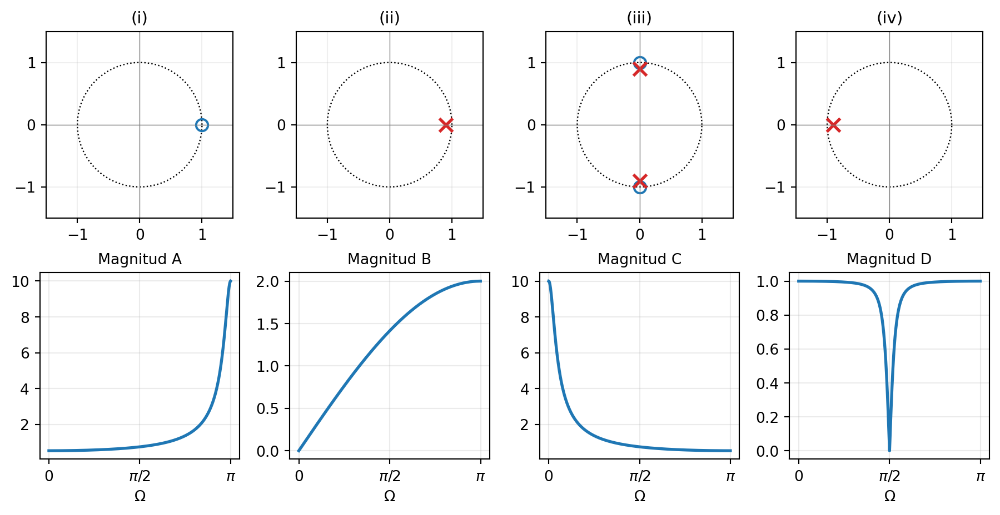
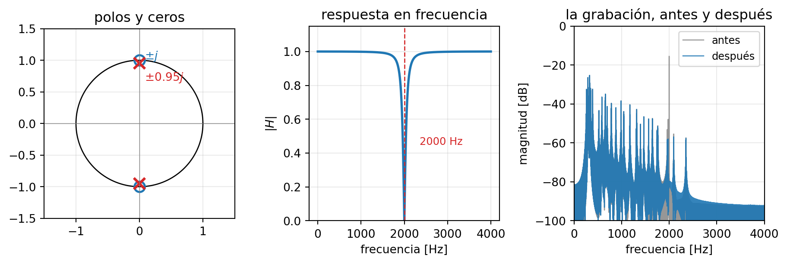

6 La transformada Z
NotaObjetivos del capítulo [U6.1–U6.7]
Al terminar este capítulo podrás: calcular la transformada Z bilateral de señales derechas, izquierdas y bilaterales, determinando en cada caso la ROC y dibujando el diagrama de polos y ceros [U6.1]; explicar el mapa z = e^{sT} que enrolla el plano s sobre el plano z [U6.1, U6.3]; invertir transformadas racionales por fracciones parciales, eligiendo la inversión según la ROC [U6.2]; conectar H(z) con la ecuación de diferencias y decidir causalidad y estabilidad desde el plano [U6.4]; leer la respuesta en frecuencia directamente del diagrama de polos y ceros, con geometría y sin integrales [U6.3, U6.5]; y — el objetivo Crear del curso [OC7] — diseñar un filtro ubicando tú los polos y los ceros, verificarlo en Python y escucharlo funcionar [U6.6]; y resolver ecuaciones de diferencias con condiciones iniciales usando la Z unilateral — el espejo discreto de la Laplace unilateral [U6.7].
Esta unidad se evalúa en la I4 y en el examen (la pregunta de diseño del examen sale de aquí). Prerrequisitos que se usan sin avisar: el plano s como mapa (capítulo 4) y la frecuencia discreta \Omega con el aliasing (capítulo 5).
6.1 Una promesa por cumplir
El primer día del curso — y en el prefacio de este Reader — quedó escrita una promesa: al final del semestre serás capaz de tomar una grabación contaminada con un zumbido, diseñar tú el filtro que lo elimina, y verificarlo con tus propios oídos. Este es el capítulo donde se cumple. Escucha el problema: una melodía muestreada a F_s = 8000 Hz, contaminada con un tono parásito de 2000 Hz:
Al final del capítulo (Sección 6.8) vas a diseñar — con cinco coeficientes que sabrás deducir completos — el filtro que borra ese tono sin dañar la música. Pero para escribir en un plano primero hay que saber leerlo, y para leerlo hay que construirlo. Ese es el arco de este capítulo: definir la transformada Z y su geografía, enrollar el mapa que ya conoces del mundo continuo, aprender a leer el círculo unitario… y entonces sí, escribir en él.
6.2 La autofunción z^n y la definición
En el capítulo 5 cerramos el mundo discreto “en el tiempo”: ecuaciones de diferencias, h[n], convolución. Pero recuerda cómo terminó la historia análoga en continuo: las ecuaciones diferenciales se volvieron álgebra cuando llegó Laplace, y el plano s se volvió un mapa donde la posición de los polos decía todo — oscila, decae, explota. El mundo discreto merece exactamente la misma herramienta.
La pista está donde siempre: en las autofunciones. En continuo, e^{st} atravesaba los sistemas LTI sin deformarse. La señal discreta análoga es la exponencial z^n con z \in \mathbb{C}. Pásala por un sistema LTI con respuesta al impulso h[n]:
y[n] = \sum_{k=-\infty}^{\infty} h[k]\, z^{n-k} = z^n \underbrace{\sum_{k=-\infty}^{\infty} h[k]\, z^{-k}}_{\text{un número: } H(z)}
La señal sale igual, multiplicada por una constante compleja H(z). Esa suma que apareció sola es la protagonista de todo el capítulo.
ImportanteDefinición: transformada Z bilateral
X(z) = \sum_{n=-\infty}^{\infty} x[n]\, z^{-n}, \qquad z \in \mathbb{C} El conjunto de valores de z donde la suma converge (absolutamente) es la región de convergencia (ROC). La transformada es el par \big(X(z), \text{ROC}\big): sin ROC, la respuesta está incompleta — exactamente como en Laplace.
Escribimos z = r\,e^{j\Omega}: módulo r y ángulo \Omega. Como la convergencia solo depende de |z| (la condición es \sum |x[n]|\, r^{-n} < \infty), la ROC siempre estará delimitada por círculos centrados en el origen.
Dos notas antes del primer cálculo:
- Notación. El ángulo en el plano z es la frecuencia discreta \Omega, en rad/muestra — la misma del capítulo 5. En [Oppenheim] la verás escrita como \omega: misma cosa, otra letra; nosotros reservamos \omega para los rad/s del mundo continuo (reaparecerá en la Sección 6.3, con todo derecho).
- Honestidad matemática (treinta segundos y seguimos): X(z) es una serie de Laurent, y toda la teoría de convergencia en anillos viene gratis del análisis complejo. Para este curso basta con operar la serie geométrica y anotar dónde converge.
TipEjemplo resuelto: el par fundamental
Calcula la transformada Z de x[n] = a^n u[n], la exponencial causal.
Solución. Serie geométrica de razón az^{-1}: X(z) = \sum_{n=0}^{\infty} a^n z^{-n} = \sum_{n=0}^{\infty} \left(a z^{-1}\right)^n = \frac{1}{1 - a z^{-1}} = \frac{z}{z-a}, \qquad \text{si } |a z^{-1}| < 1 \iff |z| > |a|
En el diagrama: polo en z = a (marca \times), cero en z = 0 (marca \circ), y la ROC es todo lo que queda afuera del círculo de radio |a|. Caso particular querido: u[n] \leftrightarrow \frac{1}{1-z^{-1}}, ROC |z| > 1.
Convención de trabajo: en discreto conviene escribir todo en potencias de z^{-1}. No es manía — cada z^{-1} es “un retardo de una muestra”, y esa lectura se cobrará en la Sección 6.5 cuando H(z) se convierta en un programa.
6.2.1 Misma fórmula, ¿misma señal?
Ahora la pregunta que define la geografía del plano. Considera x[n] = -a^n u[-n-1]: una exponencial que vive solo en el pasado (n \le -1). ¿Puede tener la misma fórmula \frac{1}{1-az^{-1}} que la causal a^n u[n]? Piénsalo antes de leer — parece imposible que dos señales tan distintas compartan transformada.
\mathcal{Z}\left\{-a^n u[-n-1]\right\} = -\sum_{n=-\infty}^{-1} a^n z^{-n} \overset{m=-n}{=} -\sum_{m=1}^{\infty} \left(\frac{z}{a}\right)^{m} = -\frac{z/a}{1 - z/a} = \frac{1}{1-az^{-1}}, \qquad |z| < |a|
Sí puede: fórmula idéntica, ROC opuesta — la causal converge afuera del polo, la anticausal adentro. Dos señales completamente distintas comparten la expresión algebraica; solo la ROC las distingue. Es el análogo exacto de lo que viste en Laplace con e^{-at}u(t) y -e^{-at}u(-t), y es la razón de que la ROC no sea un adorno: es la mitad de la respuesta.
El tercer miembro de la familia es bilateral — el análogo discreto de e^{-a|t|}. Sea x[n] = a^{|n|} con 0 < a < 1; separando en presente/futuro y pasado, x[n] = a^n u[n] + a^{-n} u[-n-1]:
X(z) = \underbrace{\frac{1}{1-az^{-1}}}_{|z|>a} + \underbrace{\frac{az}{1-az}}_{|z| < 1/a} \qquad \text{ROC: } a < |z| < \frac{1}{a}
La ROC es un anillo: la parte derecha de la señal exige estar afuera de |z| = a, la parte izquierda adentro de |z| = 1/a. Y nota el detalle con castigo: si a \ge 1, las dos condiciones son incompatibles y la transformada no existe para ningún z — no toda señal tiene transformada Z.
Estos tres ejemplos contienen ya toda la geografía posible. Las reglas de la ROC (compáralas línea a línea con las de Laplace — son las mismas, con círculos en vez de rectas):
| Señal | ROC |
|---|---|
| duración finita | todo el plano (salvo quizás z=0 y/o z=\infty) |
| derecha (causal desde algún n_0) | exterior: \lvert z\rvert > radio del polo más externo |
| izquierda | interior: \lvert z\rvert < radio del polo más interno |
| bilateral | un anillo entre dos polos |
| (siempre) | la ROC nunca contiene polos y es un solo anillo conexo |
Y el par trivial que completa el kit de supervivencia: \delta[n-k] \leftrightarrow z^{-k}, con ROC todo el plano (salvo z = 0 si k > 0).
6.3 El mapa: enrollar el plano s
En el capítulo 4 aprendiste a leer el plano s como un mapa: polos a la izquierda decaen, sobre el eje j\omega oscilan para siempre, a la derecha explotan. Ahí quedó plantada una promesa — que ese mapa te serviría de nuevo. Hoy se cobra: ya sabes leer un mapa como este; lo que vamos a hacer ahora es enrollarlo.
La conexión entre los dos planos no es una analogía: es física, y pasa por el muestreo (capítulo 5). Toma la señal continua e^{st} y muéstrala cada T segundos:
e^{s(nT)} = \left(e^{sT}\right)^n = z^n \qquad \text{con } \boxed{z = e^{sT}}
La exponencial continua del plano s se convierte en la exponencial discreta del plano z, y el puente entre ambas es el mapeo z = e^{sT}.
TipLa misma conclusión por la ruta de las transformadas
Aplica Laplace a la señal muestreada del capítulo 5, x_s(t) = \sum_n x[n]\,\delta(t-nT): X_s(s) = \sum_n x[n]\,e^{-snT} = \sum_n x[n]\,\big(e^{sT}\big)^{-n} La variable solo aparece empaquetada en e^{sT}; bautízala z y queda la definición de X(z). La transformada Z es Laplace aplicada a una señal muestreada, con e^{sT} rebautizado — así que el mapa que sigue no es una analogía, es un cambio de variable.
Veamos con calma a dónde manda cada región. Escribe s = \sigma + j\omega (aquí \omega es la frecuencia continua, en rad/s — su único territorio en este capítulo):
z = e^{\sigma T}\, e^{j\omega T} \qquad \Longrightarrow \qquad |z| = e^{\sigma T}, \qquad \angle z = \omega T = \Omega
Léelo por partes, porque aquí está todo:
- El módulo de z codifica el crecimiento: \sigma < 0 (decae) da |z| < 1; \sigma = 0 (oscila) da |z| = 1; \sigma > 0 (explota) da |z| > 1. El eje j\omega se enrolla sobre el círculo unitario, el semiplano izquierdo entero se comprime al interior del círculo, y el derecho queda afuera.
- El ángulo de z codifica la frecuencia: \Omega = \omega T — exactamente la frecuencia discreta del capítulo 5, ahora con significado geométrico. En el plano s la frecuencia se leía “hacia arriba”; en el plano z se lee como ángulo.
- Dos puntos de referencia que usaremos sin parar: s = 0 \to z = 1 (la DC vive en z = 1) y \omega = \pi/T — ¡la frecuencia de Nyquist! — \to z = e^{j\pi} = -1 (Nyquist vive en z = -1).

TipEjemplo resuelto: ¿dónde aterriza un polo?
Un sistema continuo tiene un polo en s = -2 + j3 y se muestrea con T = 1 s. ¿El polo cae dentro, sobre o fuera del círculo unitario?
Solución. z = e^{sT} = e^{-2}e^{j3}, así que |z| = e^{-2} \approx 0.135: bien adentro. El ángulo es \Omega = 3 rad/muestra. Moral general que vale más que el número: \sigma < 0 \Rightarrow |z| = e^{\sigma T} < 1 siempre — lo estable en s aterriza dentro del círculo en z, con cualquier T.
Y la letra chica del mapeo — medio minuto, pero es profunda. Como \angle z se mide módulo 2\pi, los puntos s y s + j\frac{2\pi}{T} caen en el mismo z: el mapeo no es inyectivo. Cada franja horizontal de altura \frac{2\pi}{T} del plano s se enrolla sobre el plano z completo, una y otra vez. ¿Te suena? Es el aliasing del capítulo 5, releído como geometría: frecuencias continuas distintas que se vuelven indistinguibles al muestrear son puntos distintos del plano s que aterrizan en el mismo punto del plano z. El teorema del muestreo, el dial que se repite cada 2\pi, y este enrollado son tres fotografías del mismo hecho.
El diccionario completo, ya en tu formulario oficial — para consultar, no para memorizar:
| Plano s (capítulo 4) | Plano z (hoy) |
|---|---|
| eje j\omega | círculo unitario \lvert z\rvert = 1 |
| semiplano izquierdo | interior del círculo |
| semiplano derecho | exterior del círculo |
| s = 0 (DC) | z = 1 |
| \omega = \pi/T (Nyquist) | z = -1 |
| frecuencia = altura | frecuencia = ángulo \Omega = \omega T |
| franjas de altura 2\pi/T | el mismo plano, una y otra vez (aliasing) |
6.4 La inversa: un X(z), tres señales
La Sección 6.2.1 mostró que la fórmula sola no determina la señal — la ROC decide. Ahora lo convertimos en método. Para las X(z) racionales (las de todos los sistemas de este curso), la herramienta es la misma de Laplace: fracciones parciales, escritas en la variable natural del mundo discreto, z^{-1}. Los dos pares que hay que tener tatuados:
a^n u[n] \;\longleftrightarrow\; \frac{1}{1-az^{-1}}, \;\; |z|>|a| \qquad\qquad -a^n u[-n-1] \;\longleftrightarrow\; \frac{1}{1-az^{-1}}, \;\; |z|<|a|
TipEjemplo resuelto (calibre I4): las tres señales escondidas
Encuentra todas las señales cuya transformada es X(z) = \frac{1}{\left(1-\tfrac{1}{2}z^{-1}\right)\left(1-2z^{-1}\right)}
Solución. Polos en z = \tfrac12 y z = 2: hay tres ROC posibles — exterior |z| > 2, anillo \tfrac12 < |z| < 2, interior |z| < \tfrac12 — y por lo tanto tres señales distintas en la misma fórmula. Fracciones parciales tratando z^{-1} como la variable: X(z) = \frac{A}{1-\tfrac12 z^{-1}} + \frac{B}{1-2z^{-1}}, \qquad A = \left.\frac{1}{1-2z^{-1}}\right|_{z^{-1}=2} = -\frac13, \qquad B = \left.\frac{1}{1-\tfrac12 z^{-1}}\right|_{z^{-1}=\frac12} = \frac43
(Verificación de un segundo: en z^{-1} = 0 debe dar 1: A + B = -\tfrac13 + \tfrac43 = 1 ✓.) Ahora cada término se invierte según de qué lado de su polo está la ROC:
| ROC | término de \tfrac12 | término de 2 | x[n] |
|---|---|---|---|
| \lvert z\rvert > 2 | derecha | derecha | \left[-\tfrac13\left(\tfrac12\right)^n + \tfrac43\, 2^n\right]u[n] |
| \tfrac12 < \lvert z\rvert < 2 | derecha | izquierda | -\tfrac13\left(\tfrac12\right)^n u[n] - \tfrac43\, 2^n u[-n-1] |
| \lvert z\rvert < \tfrac12 | izquierda | izquierda | \left[\tfrac13\left(\tfrac12\right)^n - \tfrac43\, 2^n\right]u[-n-1] |

La del anillo es la única que decae hacia ambos lados — la única absolutamente sumable. Guarda esa observación: en la Sección 6.5.1 se convertirá en el criterio de estabilidad.
6.4.1 El truco X(z)/z
A veces X(z) llega en potencias positivas de z (es lo natural al factorizar polos y ceros). Los pares de tabla tienen la forma \frac{z}{z-a} — con una z arriba. El truco estándar: expandir X(z)/z en fracciones parciales y multiplicar de vuelta.
Mini-ejemplo: X(z) = \dfrac{z}{(z-1)\left(z-\tfrac12\right)}, causal. \frac{X(z)}{z} = \frac{1}{(z-1)\left(z-\tfrac12\right)} = \frac{2}{z-1} - \frac{2}{z-\tfrac12} \qquad\Rightarrow\qquad X(z) = \frac{2z}{z-1} - \frac{2z}{z-\tfrac12} x[n] = 2\left[1 - \left(\tfrac12\right)^n\right]u[n]
(Chequeo: x[0] = 0 ✓ — coherente con que X(z) \to 0 cuando z \to \infty.) ¿Por qué dividir por z? Para que cada fracción simple quede con su z “de regalo” al multiplicar de vuelta, calzando con el par \frac{z}{z-a} \leftrightarrow a^n u[n]. Ambos caminos — z^{-1} directo o X(z)/z — son equivalentes; elige uno y sé consistente.
6.5 H(z), la ecuación de diferencias y la estabilidad
Aquí el plano z se vuelve operativo. La propiedad clave es el desplazamiento temporal (demuéstrala: es un cambio de índice en la definición):
x[n-k] \;\longleftrightarrow\; z^{-k}\,X(z)
Cada z^{-1} es un retardo de una muestra. Entonces una ecuación de diferencias genérica se transforma término a término, y el cociente sale solo:
\sum_k a_k\, y[n-k] = \sum_k b_k\, x[n-k] \quad\Longrightarrow\quad H(z) = \frac{Y(z)}{X(z)} = \frac{\sum_k b_k z^{-k}}{\sum_k a_k z^{-k}}
La ecuación de diferencias y H(z) son la misma información: los coeficientes de una se leen de corrido en la otra, sin cálculo. Y la vuelta funciona igual — multiplicar cruzado y devolver cada z^{-k} a su retardo. Por ejemplo, H(z) = \frac{b_0 + b_2 z^{-2}}{1 + a_2 z^{-2}} se convierte en
y[n] = b_0\, x[n] + b_2\, x[n-2] - a_2\, y[n-2]
Anótalo con estrella: esa línea es literalmente un programa. Es exactamente lo que ejecuta scipy.signal.lfilter(b, a, x) con los coeficientes b (numerador) y a (denominador) de H(z): la ecuación de diferencias corriendo muestra a muestra. En la Sección 6.8 vamos a escribir nosotros esos coeficientes… y a escuchar el resultado.
TipEjemplo resuelto (calibre I4): el circuito completo
El sistema causal y[n] - \tfrac56\, y[n-1] + \tfrac16\, y[n-2] = x[n]. Encuentra H(z), su ROC, h[n] y decide estabilidad.
Solución.
- Transferencia (lectura directa): H(z) = \dfrac{1}{1 - \tfrac56 z^{-1} + \tfrac16 z^{-2}} = \dfrac{1}{\left(1-\tfrac12 z^{-1}\right)\left(1-\tfrac13 z^{-1}\right)} — polos en \tfrac12 y \tfrac13, cero doble en z = 0.
- ROC: causal ⇒ exterior del polo más externo: |z| > \tfrac12.
- Respuesta al impulso (fracciones parciales): A = \left.\frac{1}{1-\frac13 z^{-1}}\right|_{z^{-1}=2} = 3, \;B = \left.\frac{1}{1-\frac12 z^{-1}}\right|_{z^{-1}=3} = -2: h[n] = \left[3\left(\tfrac12\right)^n - 2\left(\tfrac13\right)^n\right]u[n] (Chequeo: h[0] = 3 - 2 = 1 ✓, que coincide con iterar la ecuación con x = \delta.)
- Estabilidad: la ROC |z| > \tfrac12 contiene el círculo unitario ⇒ estable — criterio recién prometido, demostrado a continuación.
6.5.1 Estabilidad: el mapa se cierra
Un sistema LTI discreto es BIBO-estable ⇔ \sum_n |h[n]| < \infty (capítulo 5). Evalúa H(z) sobre el círculo unitario, z = e^{j\Omega} — donde |z^{-n}| = 1:
\left|H(e^{j\Omega})\right| \le \sum_n |h[n]|\,\left|e^{-j\Omega n}\right| = \sum_n |h[n]|
Si h es absolutamente sumable, la serie converge en todo el círculo — y viceversa para las racionales del curso. Conclusión, en el lugar de honor:
ImportanteEstabilidad en el plano z
\text{estable} \iff \text{la ROC contiene el círculo unitario } |z| = 1 Si además el sistema es causal (ROC exterior al polo más externo), entonces: \text{causal y estable} \iff \text{todos los polos estrictamente dentro del círculo unitario}
Es el cierre perfecto del mapa de la Sección 6.3: en s, causal + estable era “todos los polos en el semiplano izquierdo”; el mapeo z = e^{sT} manda el semiplano izquierdo al interior del círculo — la regla discreta es la regla continua, enrollada.
AdvertenciaLa trampa clásica: el polo en z = 3/2
H(z) = \dfrac{1}{1-\tfrac32 z^{-1}}, con su polo fuera del círculo. (a) Si el sistema es causal, ¿es estable? (b) ¿Existe alguna ROC que lo haga estable?
- No: causal ⇒ ROC |z| > \tfrac32, que no contiene el círculo; h[n] = \left(\tfrac32\right)^n u[n] crece sin freno. (b) Sí — y aquí muerde la trampa: la ROC |z| < \tfrac32 sí contiene el círculo. El sistema resultante es estable pero anticausal: h[n] = -\left(\tfrac32\right)^n u[-n-1], perfectamente sumable (\sum |h| = 2; verifícalo con la serie geométrica). Estabilidad y causalidad son propiedades independientes; solo se funden en “polos dentro” cuando exiges ambas a la vez. En una interrogación, “polo fuera del círculo ⇒ inestable” sin mencionar causalidad es respuesta incompleta.
Consecuencia inmediata y valiosísima: para un sistema estable, H(z) existe sobre el círculo unitario. Lo que vive ahí merece sección propia — es la respuesta en frecuencia.
6.6 Condiciones iniciales: la transformada Z unilateral
Todo lo anterior asumió sistemas en reposo. Pero en el capítulo 4 aprendiste a resolver ecuaciones diferenciales con condiciones iniciales usando la Laplace unilateral — y las ecuaciones de diferencias merecen exactamente el mismo trato. El espejo es término a término:
ImportanteLa Z unilateral y su propiedad de trabajo
\mathcal{Z}_u\{x[n]\} = \sum_{n=0}^{\infty} x[n]\,z^{-n} \qquad\qquad \mathcal{Z}_u\{y[n-1]\} = z^{-1}\,Y(z) + y[-1] El retardo saca la condición inicial a la vista — igual que la derivada sacaba y(0^-) en Laplace.
Ejemplo resuelto. y[n] - \tfrac12\,y[n-1] = \left(\tfrac14\right)^n u[n], con y[-1] = 2.
Transformar con la propiedad: Y(z) - \tfrac12\left[z^{-1}Y(z) + 2\right] = \frac{1}{1-\tfrac14 z^{-1}} \;\Longrightarrow\; Y(z)\left(1-\tfrac12 z^{-1}\right) = 1 + \frac{1}{1-\tfrac14 z^{-1}}
Fracciones parciales (la técnica de Sección 6.4, en la variable z^{-1}) y de vuelta al tiempo: Y(z) = \frac{3}{1-\tfrac12 z^{-1}} - \frac{1}{1-\tfrac14 z^{-1}} \;\Longrightarrow\; y[n] = \left[\,3\left(\tfrac12\right)^n - \left(\tfrac14\right)^n\right]u[n]
Verifica contra la recursión directa: y[0] = \tfrac12 \cdot 2 + 1 = 2 y la fórmula da 3-1=2; y[1] = \tfrac12 \cdot 2 + \tfrac14 = \tfrac54 y la fórmula da \tfrac32 - \tfrac14 = \tfrac54. ✓
Y fíjate en la anatomía de la respuesta: una parte proviene de la condición inicial (la respuesta a entrada nula) y otra de la entrada (la respuesta a estado nulo). La unilateral entrega esa separación gratis — la misma que viste en las EDOs del capítulo 4.
En el banco: [DB E0298] (este mismo problema, con la verificación como parte del enunciado) y [DB E0299] (una cuenta de ahorro con interés compuesto: el sistema tiene un polo fuera del círculo y aun así es perfectamente útil — inestable no significa inútil).
Si la recurrencia viene escrita “hacia adelante”. A veces el modelo se plantea como y[n+2] = \dots en vez de y[n-2] = \dots (los conejos de Fibonacci son el caso clásico). Ahí la propiedad que sirve es la de adelanto, que en vez de sumar el pasado lo resta: \mathcal{Z}_u\{y[n+1]\} = z\,Y(z) - z\,y[0] \qquad\qquad \mathcal{Z}_u\{y[n+2]\} = z^2 Y(z) - z^2 y[0] - z\,y[1] La deducción es la misma reindexación de siempre, pero mirando hacia el otro lado: al correr la suma hacia adelante, los primeros términos se salen del rango n\ge0 y hay que descontarlos. En el banco: [DB E0371] (Fibonacci, con la fórmula de Binet y el número áureo saliendo del polo dominante).
Los atajos de los extremos, versión discreta. Los teoremas del valor inicial y final del capítulo 4 (Sección 4.5.1) se traducen término a término: y[0] = \lim_{z\to\infty} Y(z) \qquad\qquad \lim_{n\to\infty} y[n] = \lim_{z\to 1}\,(z-1)\,Y(z) El primero es casi gratis: en \sum_{n\ge0} y[n]z^{-n}, cuando z\to\infty todas las potencias negativas mueren y sobrevive solo y[0]. El segundo sale de la suma telescópica de \mathcal{Z}_u\{y[n+1]-y[n]\}, y hereda la misma letra chica que en continuo: vale solo si los polos de (z-1)Y(z) están dentro del círculo unitario — el papel del eje j\omega lo juega ahora la circunferencia |z|=1, como siempre en el traslado s→z. Chequeo exprés con el ejemplo de arriba: \lim_{z\to\infty} Y(z) = 3-1 = 2 = y[0] ✓, y el valor final da 0 (ambos polos, \tfrac12 y \tfrac14, dentro del círculo; y en efecto y[n]\to0) ✓.
6.7 Leer el círculo
Si la ROC contiene el círculo, podemos evaluar H en z = e^{j\Omega}. ¿Y qué significa evaluar ahí? Toma la autofunción de la Sección 6.2 con z sobre el círculo: x[n] = e^{j\Omega n} — ¡una sinusoide compleja pura de frecuencia \Omega!
x[n] = e^{j\Omega n} \;\longrightarrow\; y[n] = H(e^{j\Omega})\, e^{j\Omega n}
El número complejo H(e^{j\Omega}) dice qué le pasa a esa frecuencia: |H(e^{j\Omega})| la amplifica o atenúa, \angle H(e^{j\Omega}) la desfasa. Para entradas reales: \cos(\Omega n) \to |H(e^{j\Omega})|\cos\!\big(\Omega n + \angle H(e^{j\Omega})\big).
El círculo unitario es el dial de frecuencias. Recorrerlo desde z = 1 (ángulo 0) hasta z = -1 (ángulo \pi) es barrer todas las frecuencias discretas: la DC en z = 1, la Nyquist en z = -1 — los dos puntos de referencia del diccionario de la Sección 6.3, ahora con trabajo. Más allá de \pi el ángulo se repite módulo 2\pi: la periodicidad del espectro discreto, ahora geométrica — el dial es un círculo, no una recta. Con señales reales basta la mitad superior (0 \le \Omega \le \pi); la inferior es el espejo conjugado.
Y la traducción a frecuencia física, que usaremos sin parar al diseñar: si la señal fue muestreada a F_s, la frecuencia f en Hz vive en el ángulo
\Omega = 2\pi\,\frac{f}{F_s} \quad \text{(rad/muestra)} \qquad\qquad \text{Nyquist } \left(f = \tfrac{F_s}{2}\right) \to \Omega = \pi
Nota honesta (treinta segundos): esta función H(e^{j\Omega}) = \sum_n h[n]\, e^{-j\Omega n} tiene nombre propio y capítulo propio. Por ahora nos basta la lectura que la define: es H(z) restringida al círculo. El nombre, al final del capítulo.
6.7.1 El método geométrico: leer |H| con una regla
Factoriza H(z) por sus polos y ceros (en potencias de z):
H(z) = K\,\frac{\prod_k (z - c_k)}{\prod_k (z - p_k)} \qquad\Longrightarrow\qquad \left|H(e^{j\Omega})\right| = |K|\,\frac{\prod_k \left|e^{j\Omega} - c_k\right|}{\prod_k \left|e^{j\Omega} - p_k\right|}
Y aquí está el regalo: \left|e^{j\Omega} - c_k\right| es, literalmente, la distancia desde el punto que recorre el círculo hasta el cero c_k — y lo mismo con los polos. Entonces:
ImportanteEl método de las distancias
|H(e^{j\Omega})| = |K| \cdot \frac{\text{producto de las distancias a los ceros}}{\text{producto de las distancias a los polos}} Reglas de lectura inmediatas:
- Al pasar cerca de un cero, el numerador se achica → |H| baja. Si el cero está sobre el círculo, |H| = 0 exacto en ese ángulo: la frecuencia muere.
- Al pasar cerca de un polo, el denominador se achica → |H| sube — pico tanto más alto y angosto cuanto más pegado al círculo esté el polo.
- Polos o ceros en el origen: distancia constante 1 desde todo el círculo → no afectan |H|, solo la fase.
TipEjemplo resuelto: un pasa-bajos leído con regla
H(z) = \dfrac{1}{1-0.9z^{-1}} = \dfrac{z}{z-0.9}: cero en el origen (ignorable para |H|), polo en 0.9. Estima |H| en DC y en Nyquist.
Solución. En \Omega = 0 (z = 1): distancia al polo = 1 - 0.9 = 0.1, así que |H| = \frac{1}{0.1} = 10. En \Omega = \pi (z = -1): distancia = 1 + 0.9 = 1.9, así que |H| = \frac{1}{1.9} \approx 0.53. Un factor 19 entre graves y agudos, medido con una regla: es un pasa-bajos, y no hizo falta ni una integral.

6.7.2 Tres recorridos guiados
(a) Un cero en z = 1: matar la DC. H(z) = 1 - z^{-1} — la “derivada discreta”, y[n] = x[n] - x[n-1]. El cero está sobre el círculo, en el ángulo de la DC → |H(e^{j0})| = 0: cualquier constante muere. Vale la pena verlo una vez con álgebra (el truco de factorizar la fase a la mitad es de uso frecuente en la I4): H(e^{j\Omega}) = 1 - e^{-j\Omega} = e^{-j\Omega/2}\left(e^{j\Omega/2} - e^{-j\Omega/2}\right) = 2j\,\sin\!\left(\tfrac{\Omega}{2}\right)e^{-j\Omega/2} \;\Rightarrow\; |H| = 2\left|\sin\tfrac{\Omega}{2}\right| Crece de 0 (DC) a 2 (Nyquist): un pasa-altos elemental. Geometría y álgebra cuentan la misma historia.
(b) Polos gemelos cerca del círculo: resonancia. Polos en 0.95\,e^{\pm j\pi/3} (más ceros en el origen). Cerca de \Omega = \pi/3 la distancia al polo superior se hace diminuta (\approx 0.05) → pico enorme y angosto. Eso es un modo de resonancia: la cuerda de guitarra, el modo de una sala, la campana. Un polo pegado al círculo “suena” — cuanto más cerca, más puro y más largo el timbre. En el límite (polo sobre el círculo) el sistema es un oscilador: marginalmente estable.
(c) Promedio móvil de 4 [DB E0184]: h[n] = \tfrac14\{1,1,1,1\}, H(z) = \frac14\left(1 + z^{-1} + z^{-2} + z^{-3}\right) = \frac{1}{4}\,\frac{1-z^{-4}}{1-z^{-1}} Los ceros de 1 - z^{-4} son las raíces cuartas de la unidad \{1, j, -1, -j\}; el cero en z = 1 se cancela con el polo de 1 - z^{-1} (error clásico: no verlo y declarar un polo en el círculo). Quedan ceros en j, -1, -j — ángulos \tfrac{\pi}{2} y \pi — y 3 polos en el origen, invisibles para |H|: un pasa-bajos con nulos exactos en media banda y en Nyquist. Al oído: promediar suaviza = atenúa agudos; ahora sabes exactamente cuáles mata.
6.7.3 Emparejar H(z) \leftrightarrow |H|: el calibre de la I4
Este es el formato con que la I4 (y el examen) evalúa la lectura del círculo: se dan diagramas de polos y ceros y curvas de magnitud en desorden, y se pide emparejarlos justificando por posiciones de polos y ceros — no calculando. Cuatro sistemas causales y estables:
\text{(i) } H(z) = 1 - z^{-1} \qquad \text{(ii) } \frac{1}{1-0.9z^{-1}} \qquad \text{(iii) } 0.905\,\frac{1+z^{-2}}{1+0.81z^{-2}} \qquad \text{(iv) } \frac{1}{1+0.9z^{-1}}

Intenta los cuatro pareos con las reglas de la Sección 6.7.1 antes de seguir. Guía: ¿dónde hay ceros sobre el círculo (ahí |H| = 0 exacto)? ¿En qué ángulo está el polo más cercano al círculo (ahí el pico)?
TipSolución del emparejamiento
(i) → B: cero en z = 1 (ángulo 0) anula la DC y |H| crece hacia Nyquist — pasa-altos. (ii) → C: polo en 0.9, ángulo 0: pico en DC — pasa-bajos. (iii) → D: ceros en \pm j, sobre el círculo en ángulo \pi/2: muerte exacta en media banda, y los polos en \pm 0.9j (mismo ángulo, adentro) aprietan el valle — un notch. (iv) → A: polo en -0.9, ángulo \pi: pico en Nyquist — pasa-altos resonante. En la evaluación se pide exactamente esta justificación: posiciones, ángulos y distancias — cero cálculo.
Y guarda el caso (iii): no lo vamos a analizar más — lo vamos a diseñar desde cero, ahora mismo. Hasta aquí aprendiste a leer el plano; lo que sigue es escribir en él.
6.8 Diseñar: escribir en el plano
Volvamos a la grabación de la Sección 6.1: melodía a F_s = 8000 Hz, tono parásito de 2000 Hz. La especificación de ingeniería: eliminar el tono sin dañar el resto — en particular la DC y los graves, donde vive la música. Hasta aquí siempre analizamos filtros que otro hizo; ahora cambia la dirección de la flecha: nosotros decidimos dónde van los polos y los ceros. Todo el capítulo fue para poder hacer esto con fundamento: el plano (Sección 6.2), H(z) \leftrightarrow programa (Sección 6.5), leer el círculo (Sección 6.7).
ImportanteLa receta de diseño por polos y ceros (está en tu formulario oficial, tal cual)
- Especificación: ¿qué frecuencias matar, qué frecuencias proteger? (en Hz, con su F_s).
- Traducir a frecuencia digital: \Omega_0 = 2\pi\,\dfrac{f_0}{F_s} (rad/muestra) — el ángulo en el círculo.
- Ceros donde hay que matar: sobre el círculo unitario, en e^{\pm j\Omega_0} (par conjugado ⇒ coeficientes reales).
- Polos cerca, para agudizar: mismo ángulo, radio r < 1: p = r\,e^{\pm j\Omega_0}.
- Ganancia K para normalizar la banda de paso (típico: |H| = 1 en DC, es decir en z = 1).
Y siempre: verificar (freqz) y, si se puede, escuchar.
6.8.1 El notch, paso a paso
Paso 2 — traducir. \Omega_0 = 2\pi\,\dfrac{2000}{8000} = \dfrac{\pi}{2}. El zumbido vive en el ángulo 90° del círculo: exactamente en media banda.
Paso 3 — ceros. c_{1,2} = e^{\pm j\pi/2} = \pm j. El filtro solo-ceros (FIR), en forma causal: H_{\text{FIR}}(z) = (1 - jz^{-1})(1 + jz^{-1}) = 1 + z^{-2} \qquad\Longrightarrow\qquad y[n] = x[n] + x[n-2]
Detente a admirarlo: una suma con la muestra de hace dos instantes mata 2000 Hz exactamente — una sinusoide a \Omega = \pi/2 se repite invertida cada dos muestras (x[n-2] = -x[n]), y la suma la cancela. Pero antes de celebrar, lee el círculo como aprendiste: \left|H_{\text{FIR}}(e^{j\Omega})\right| = \left|1 + e^{-2j\Omega}\right| = 2|\cos\Omega|. Atenúa media banda a su alrededor — no es un bisturí, es una bofetada. Aquí entran los polos.
Paso 4 — polos. Van en el mismo ángulo que los ceros, adentro: p_{1,2} = r\,e^{\pm j\pi/2} con r = 0.95. ¿Por qué eso angosta el valle? Distancias: lejos de \Omega_0, el punto del círculo ve al cero y al polo casi a la misma distancia → el cociente es \approx 1 y el filtro no toca esas frecuencias. Solo muy cerca de \Omega_0 el cero “gana” (su distancia llega a 0; la del polo se detiene en 1 - r). Cuanto más pegado el polo al cero — r \to 1 — mejor la cancelación lejos y más angosto el valle. Regla práctica: ancho a -3 dB \approx 2(1-r) rad — con r = 0.95, unos 0.1 rad \approx 130 Hz. (¿Y por qué no r > 1, “para agudizar más”? Sección 6.5.1: inestable. ¿Y r = 1? Polo sobre el cero: se cancelan y el filtro desaparece.) \text{denominador} = (1 - 0.95jz^{-1})(1 + 0.95jz^{-1}) = 1 + 0.9025\,z^{-2}
Paso 5 — ganancia. Pedimos |H| = 1 en DC (z = 1): H(1) = K\,\frac{1 + 1}{1 + 0.9025} = 1 \qquad\Longrightarrow\qquad K = \frac{1.9025}{2} = 0.95125
\boxed{\;H(z) = 0.95125\;\frac{1 + z^{-2}}{1 + 0.9025\,z^{-2}}\;}
Y por la Sección 6.5, esto ya es un programa — la ecuación de diferencias del filtro:
y[n] = 0.95125\,x[n] + 0.95125\,x[n-2] - 0.9025\,y[n-2]
Cinco operaciones por muestra para borrar quirúrgicamente una frecuencia. (Este diseño, con r = 0.9, ha sido literalmente pregunta de diseño de examen — mismo método, K = 0.905.)
6.8.2 Verificar y escuchar
En diseño, verificar es parte de la respuesta. La plantilla completa, para llevar (es la misma de la Lista 13, del control de diseño y del concurso):
import numpy as np
from scipy import signal
Fs = 8000 # frecuencia de muestreo [Hz]
r = 0.95 # radio de los polos
K = (1 + r**2) / 2 # ganancia: |H| = 1 en DC (z = 1)
b = K * np.array([1, 0, 1]) # numerador: K(1 + z^-2) <- ceros en ±j
a = np.array([1, 0, r**2]) # denominador: 1 + r² z^-2 <- polos en ±jr
w, H = signal.freqz(b, a, worN=4096, fs=Fs) # H(e^{jΩ}) sobre el círculo
print(f"K : {K:.5f}")
print(f"|H| en DC : {np.abs(H[0]):.4f}")
print(f"|H| en 2000 Hz : {np.abs(H[np.argmin(np.abs(w - 2000))]):.2e}")
print(f"|H| en Nyquist : {np.abs(H[-1]):.4f}")
# y aplicar el filtro a una grabación x es UNA línea:
# y = signal.lfilter(b, a, x) # la ecuación de diferencias, muestra a muestraK : 0.95125
|H| en DC : 1.0000
|H| en 2000 Hz : 1.19e-15
|H| en Nyquist : 1.0000Lee el código como lo que es: b y a son los coeficientes de los polinomios de H(z) — los mismos de la ecuación de diferencias; freqz evalúa H sobre el círculo — el método de las distancias hecho función; lfilter ejecuta la ecuación de diferencias sobre la señal. La verificación numérica confirma el diseño: |H| = 1.0000 en DC, |H| \approx 10^{-15} (cero, en aritmética de punto flotante) en 2000 Hz.

Y ahora sí — el momento de la verdad. La grabación contaminada, filtrada con y = lfilter(b, a, x):
Silencio donde había zumbido. Este es el momento de decirlo despacio: la promesa del prefacio — tomar una grabación contaminada, diseñar tú el filtro, verificarlo con tus oídos — está cumplida. Y no por una caja negra: por un filtro de cinco coeficientes que sabes deducir completo. Euler puso los ceros (e^{\pm j\pi/2} = \pm j), las autofunciones explican por qué H actúa frecuencia a frecuencia, el mapa del capítulo 4 enrollado dice dónde pueden vivir los polos, y el círculo te dejó leer lo que ibas a oír antes de oírlo. El curso entero cabe en esos cinco coeficientes.
6.8.3 Variaciones sobre el mismo tema
La receta del notch es un caso de una idea más general: diseñar = decidir dónde poner los ceros, y cuánto acercar los polos. Tres parientes inmediatos:
Primer orden: el bloqueador de DC. ¿Deriva de continua en un sensor? Un solo cero en z = 1 (el ángulo de la DC) y su polo corrector en 0.95: H(z) = K\,\frac{1 - z^{-1}}{1 - 0.95\,z^{-1}} con K normalizado en Nyquist — H(-1) = K\frac{2}{1.95} = 1 \Rightarrow K = 0.975 — porque normalizar en DC es imposible: ahí |H| = 0 por diseño. Regla general: la ganancia se fija donde el filtro debe pasar, nunca donde debe matar. Es el notch de la Sección 6.8.1 con un solo cero real: la receta, en miniatura.
Promedio móvil, leído como diseño. El promedio de M muestras pone ceros en e^{j2\pi k/M}, k = 1, \dots, M-1 (Sección 6.7.2). Léelo ahora como diseñador: elegir M es elegir qué frecuencias morirán. ¿Matar 1000 Hz con F_s = 8000 Hz usando solo sumas? Necesitas un cero en \Omega = \pi/4 = 2\pi/8: el promedio de M = 8 lo hace gratis (y de regalo mata 2000, 3000 y 4000 Hz). Es el filtro más barato del mundo — a cambio, aplasta los agudos.
Peine (comb): un notch por cada diente. ¿Y si el enemigo no es un tono sino un tono con todos sus armónicos — el zumbido de la red eléctrica en 50, 100, 150, … Hz? Reparte N ceros equiespaciados sobre el círculo, con sus polos apretando cada diente: H(z) = K\,\frac{1 - z^{-N}}{1 - \rho^N z^{-N}} \qquad \text{ceros en } e^{j2\pi k/N}, \quad \text{polos en } \rho\, e^{j2\pi k/N} con N = F_s/f_0: un valle en f_0 y en cada múltiplo — la versión industrial del notch. Ojo de diseñador: el diente k = 0 mata también la DC; a veces es un regalo (deriva de un ECG), a veces un problema (la DC es información). Decidirlo es parte del diseño — como en los ejercicios de la Lista 13.
6.9 Cierre: la función que vive en el círculo
Una pregunta quedó pendiente en la Sección 6.7. Toda la segunda mitad del capítulo giró en torno a la restricción de X(z) al círculo unitario, X(e^{j\Omega}) — con ella leímos filtros, con ella diseñamos el notch. ¿Y cómo se llama esa función? Tiene nombre propio: es la transformada de Fourier de tiempo discreto — la DTFT — y es la protagonista del capítulo 7, donde traerá sus propiedades, su inversa, y su hija computable: la DFT que ejecuta tu computador cada vez que llamas a fft. La conoces desde antes de que te la presenten: es X(z) leída sobre el dial.
6.10 En una página
- Definición: X(z) = \sum_n x[n]\,z^{-n}; la transformada es el par (X(z), \text{ROC}). z^n es la autofunción de los sistemas LTI discretos.
- Pares canónicos: a^n u[n] \leftrightarrow \frac{1}{1-az^{-1}}, |z| > |a|; -a^n u[-n-1] \leftrightarrow misma fórmula, |z| < |a|; a^{|n|} \leftrightarrow ROC anular a < |z| < 1/a (y no existe si a \ge 1); \delta[n-k] \leftrightarrow z^{-k}.
- ROC: derecha → exterior, izquierda → interior, bilateral → anillo; nunca contiene polos.
- El mapa z = e^{sT}: |z| = e^{\sigma T}, \angle z = \omega T = \Omega. Eje j\omega → círculo unitario; semiplano izquierdo → interior; DC → z = 1; Nyquist → z = -1; franjas de altura 2\pi/T → el mismo plano (aliasing). La regla discreta es la continua, enrollada.
- Inversa: fracciones parciales en z^{-1}; cada término se invierte según de qué lado de su polo está la ROC (un X(z), tres señales). Truco X(z)/z para potencias positivas.
- x[n-k] \leftrightarrow z^{-k}X(z): cada z^{-1} es un retardo; H(z) \leftrightarrow ecuación de diferencias, lectura directa en ambos sentidos; esa ecuación es
lfilter(b, a, x). - Estable ⇔ ROC ⊇ círculo unitario; causal y estable ⇔ polos estrictamente dentro. Estabilidad y causalidad son independientes (la trampa del polo en 3/2).
- Respuesta en frecuencia = H(z) en z = e^{j\Omega}; \Omega = 2\pi f/F_s. Método de las distancias: |H| = |K|\,\frac{\prod \text{dist. a ceros}}{\prod \text{dist. a polos}} — cero sobre el círculo mata su frecuencia, polo cercano la realza, origen no afecta |H|.
- Receta de diseño: especificar → \Omega_0 = 2\pi f_0/F_s → ceros en e^{\pm j\Omega_0} → polos en r\,e^{\pm j\Omega_0} → K en la banda de paso; ancho del valle \approx 2(1-r) rad; verificar con
freqz, aplicar conlfilter. Notch de 2 kHz a F_s = 8 kHz: H(z) = 0.95125\,\frac{1+z^{-2}}{1+0.9025 z^{-2}}. - X(z) restringida al círculo se llama DTFT → capítulo 7.
6.11 Ejercicios
Del banco del curso y de la Lista 13, en orden sugerido (los códigos [DB E0xxx] identifican el ejercicio en el banco; aparecen repartidos en las Listas 12–13):
- [DB E0175] (intermedio) Transformada Z de secuencias comunes — a^n u[n], (a^n - b^n)u[n], n\,a^n u[n] — con sus ROC. [U6.1]
- [DB E0181] (intermedio) Z de la secuencia alterna causal \{1, 0, -1, 0, 1, \dots\} — sus polos en \pm j te resultarán familiares al llegar al notch. [U6.1]
- [DB E0176] (básico) El teorema del valor final en la transformada Z. [U6.1]
- [DB E0182] (básico) Inversa de una función racional simple. [U6.2]
- [DB E0177] (intermedio) Inversa por métodos directo, de expansión y propiedades. [U6.2]
- [DB E0180] (intermedio) De la ecuación de diferencias a H(z), h[n] y estabilidad — el circuito completo de la Sección 6.5. [U6.2, U6.4]
- [DB E0179] (intermedio) Estabilidad de un sistema parametrizado: seis polos en un círculo de radio e^{-p}. [U6.3, U6.4]
- [DB E0183] (avanzado) Inversa por diferenciación en el dominio z. [U6.2]
- [DB E0184] (intermedio) Polos y ceros del promedio móvil — con la cancelación polo-cero que no hay que perderse. [U6.4, U6.5]
- L13.1 (nuevo — Lista 13) (guiado) Bloqueador de DC de primer orden: cero en z=1, polo en 0.95, normalización en Nyquist — ¿y por qué no en DC? [U6.6]
- L13.2 (nuevo — Lista 13) (calibre examen) Notch de red americana: 60 Hz con F_s = 480 Hz, receta completa con verificación numérica. [U6.6]
- L13.3 (nuevo — Lista 13) El filtro más barato del mundo: matar 1000 Hz con un promedio móvil — elegir M es diseñar. [U6.5, U6.6]
- L13.5 (nuevo — Lista 13) Peine para la red y sus armónicos: N = F_s/f_0 ceros equiespaciados, y la discusión del diente en DC. [U6.6]
- L13.6 (nuevo — Lista 13) (desafío) Doble notch en cascada: 1000 y 3000 Hz a la vez — con una sorpresa algebraica al multiplicar los polinomios. [U6.6]
NotaAntes de seguir
Si puedes (a) invertir el ejemplo de la Sección 6.4 en sus tres versiones sin mirar, (b) justificar los cuatro pareos de la Sección 6.7.3 con distancias, y (c) rehacer el notch completo de la Sección 6.8.1 para un tono de 60 Hz a F_s = 480 Hz (ejercicio 11), estás listo para la I4 en lo que a esta unidad respecta — y para el control de diseño. Si el paso (c) te costó, la receta de 5 pasos merece otra pasada: es la que se evalúa en el examen.
6.12 Para profundizar
- [Oppenheim] §10.0–10.2 (definición, ejemplos y propiedades de la ROC — con más casos de ROC anular), §10.3 (la inversa, incluida la expansión en serie de potencias), §10.4 (evaluación geométrica de la respuesta en frecuencia — la fuente del método de las distancias), §10.5 (propiedades), §10.7 (análisis de sistemas LTI: causalidad en §10.7.1, estabilidad en §10.7.2).
- [Alvarado] §5.2 (transformada z bilateral: directa, propiedades e inversa, con abundantes ejemplos resueltos de fracciones parciales), §5.3.3 (análisis de sistemas LTI en tiempo discreto).
- El material de C23–C26 del curso, cuya secuencia sigue este capítulo, incluye además las bases del concurso de diseño (C26): el notch de este capítulo es el punto de partida — con orden 6 se puede lograr mucho más.